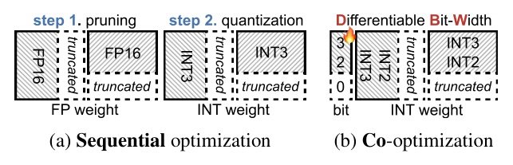
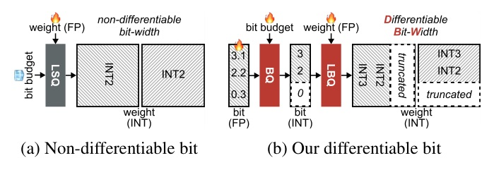
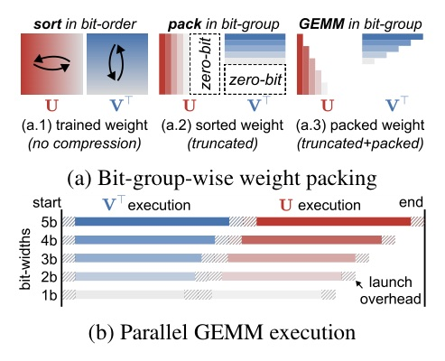
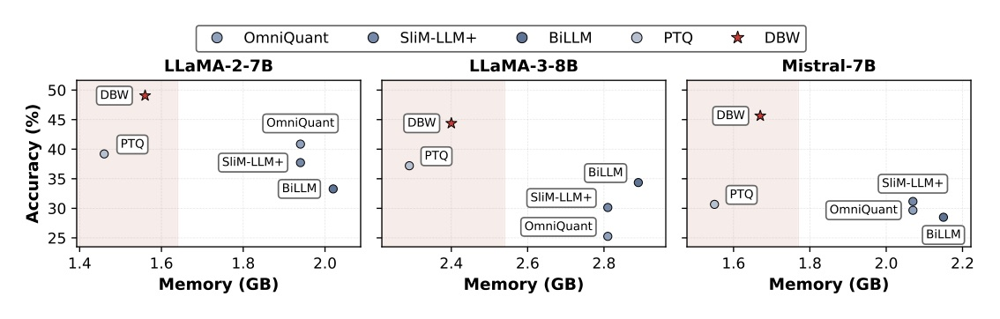
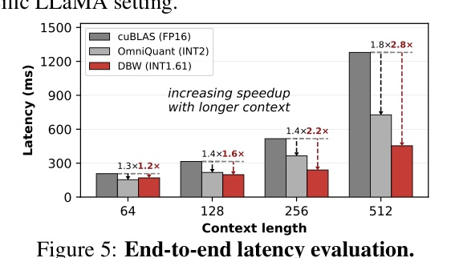
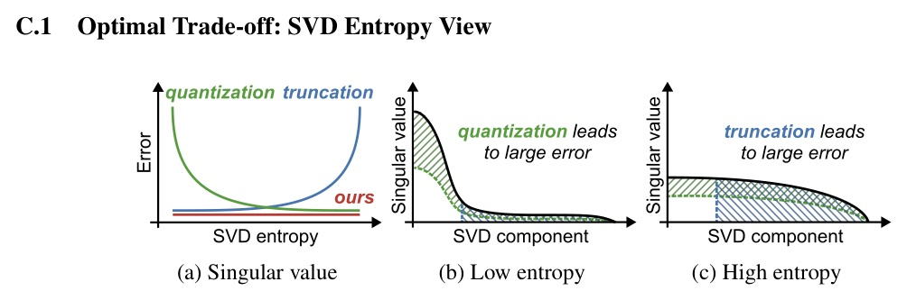
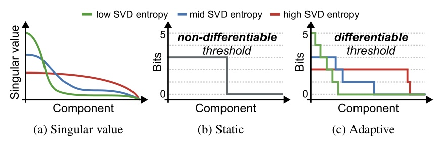
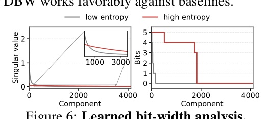

Co-optimizing Pruning and Quantization via SVD for Ultra-Efficient LLM Compression

在極低 bit 下，先剪再量化不是最佳化；把「是否留下」也當成可學的 bit allocation 才是。


| LLaMA | SVD+OmniQ PPL | SVD+OmniQ Acc | DBW PPL | DBW Acc |
|---|---|---|---|---|
| 7B | 17.22 | 42.84 | 10.65 | 48.98 |
| 2-7B | 77.10 | 29.35 | 10.54 | 49.06 |
| 3-8B | 89.41 | 30.52 | 19.38 | 44.38 |


| LLaMA | Ratio | Memory | SVD+GPTQ Acc | DBW Acc |
|---|---|---|---|---|
| 7B | 46.33% | 1.56 GB | 37.17 | 48.98 |
| 2-7B | 46.33% | 1.56 GB | 27.80 | 49.06 |
| 3-8B | 46.33% | 2.40 GB | 30.26 | 44.38 |



| LLaMA-2-7B allocation | PPL | Accuracy |
|---|---|---|
| Uniform | 650.81 | 25.05 |
| Heuristic SVD-aware | 11.69 | 45.10 |
| Learnable DBW | 10.54 | 49.06 |
| Targets learned | PPL | Accuracy |
|---|---|---|
| beta | 11.01 | 48.42 |
| beta + alpha | 10.74 | 48.80 |
| beta + alpha + sigma | 10.54 | 49.06 |
| Leftover-bit rule | PPL | Accuracy |
|---|---|---|
| Floor only | 11.83 | 46.13 |
| Random | 11.86 | 46.18 |
| Hamilton largest remainder | 10.54 | 49.06 |
| Model | DBW bpw | PPL | Accuracy |
|---|---|---|---|
| Gemma-7B | 1.61 | 74.49 | 30.27 |
| Qwen-2.5-7B | 1.61 | 20.98 | 44.61 |
| Mistral-7B | 1.61 | 14.30 | 45.64 |
把 compression budget 從「每層一個固定 bit」升級成「以 component entropy 為訊號的可學資源分配」。
“By completely discarding the 0-bit components, we perform rank truncation.”
0-bit 不是一種極低精度；它就是把該 SVD component 拿掉。§1 p.2
“This process precisely aligns the quantization resolution with the specific entropy of each of the SVD components.”
precision allocation 的對象是 component 的資訊密度，而不是 layer-wide 的固定設定。§2.1 p.3
“Hamilton gives a deterministic budget-preserving projection and yields stable final performance.”
將 continuous allocation 落到 integer bit budget 的投影方式，直接影響最終品質。§C.2 p.16
NeurIPS 2026 · arXiv:2610.06026v1 · daily AI research deck